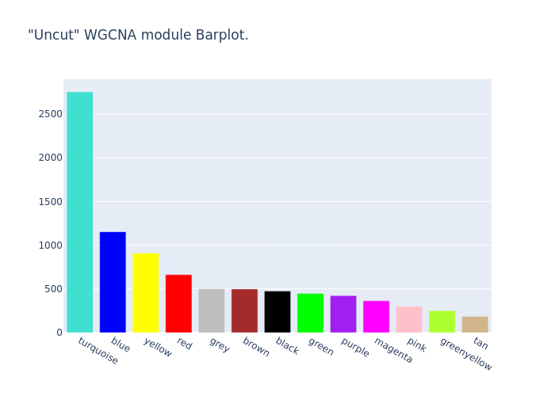
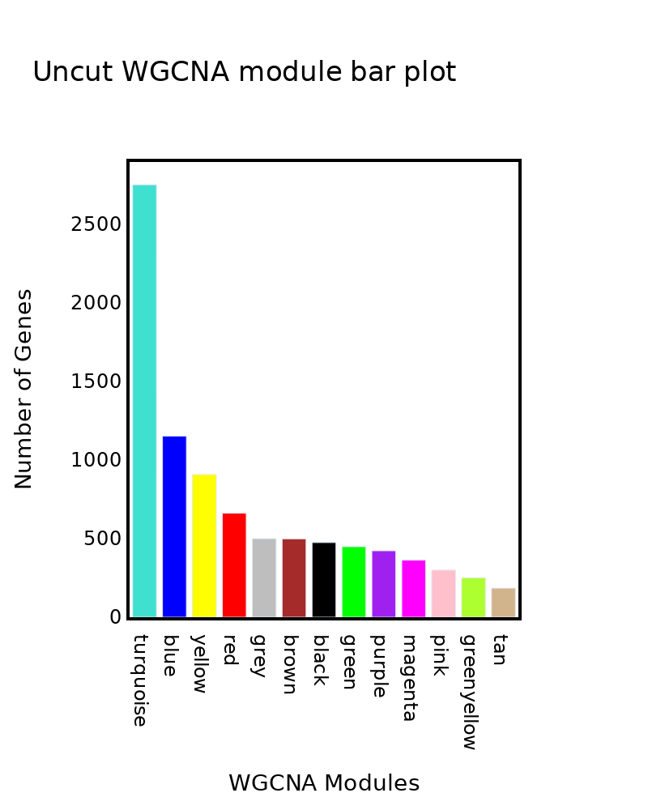
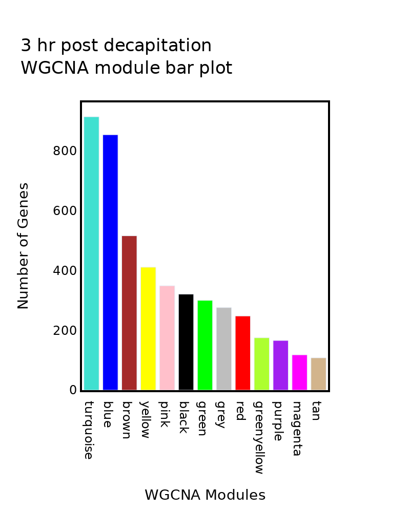
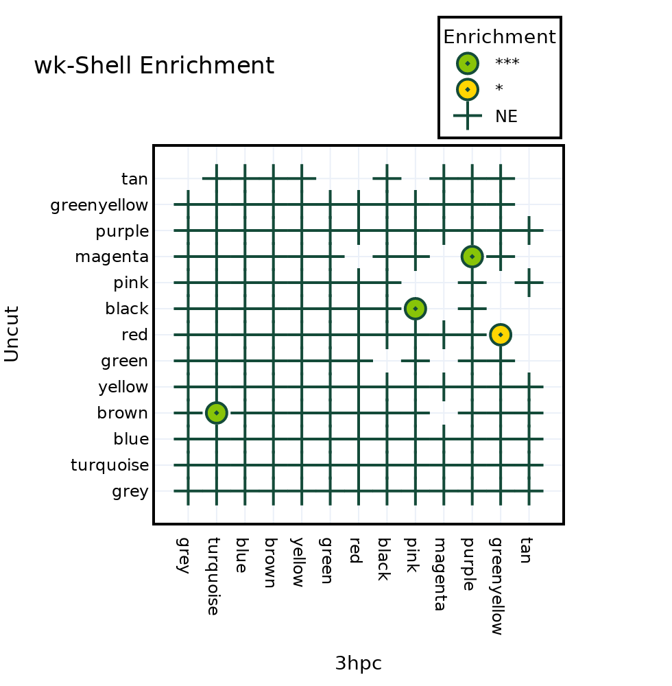
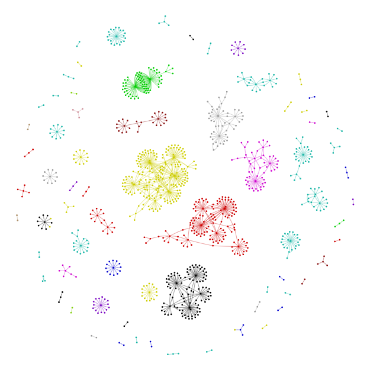
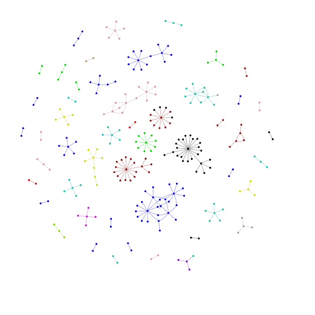
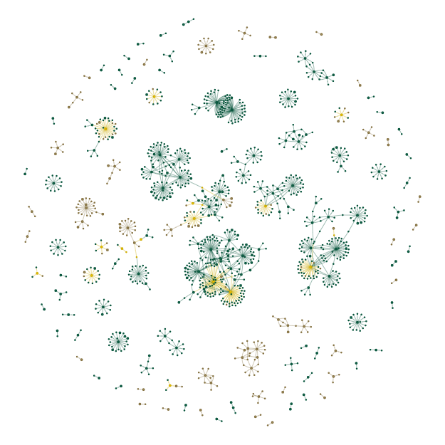

Demo
Contents
Demo#
import sys
# caution: path[0] is reserved for script path (or '' in REPL)
sys.path.insert(1, '.')
import pprint
pp = pprint.PrettyPrinter(depth=4, width=80, compact=True)
from POTFUL import POTFUL
POT = POTFUL()
POTFUL
StX;. @:X;.
: 88S ;X88@ ..
8888X .X88X;. 8S @
;88 :.. 88 :.: X8X
.;SS8. 8888@ .X88Xt..
::. .88 :.. 88 ..
.. :88X. . 8X8.
:;. ..;:. t88%8 8:
.. ... ;SS888XX88;
;X%t8.8.8.8.8.8.8.8.8.8.8.8888@8888X8;.
888@X8@@@@@@@@@@@@@@@@@@@@@88SX@@t;...
@8@8t888@88@@888@888@888@;8@88:::..
%88@%;;:.:::.:::::::::::%888Xt. .
.888@t@;;:;:;;;;;:;;;;%8;88t8
:88@8@8888888888888888@8888
;Xt8888@8@8@888@888@88888.
.:%S88888888888888888S%;:.
..:;;;;t;t;t;t;;:....
................
. .
Results will be saved in 'POTFUL_OUT/' folder
LOAD Auxiliary Files#
POT.Load_Auxiliary_Files(WGCNA_COLOR_MAP="Auxiliary_File/WGCNA_COLOR_MAP.csv",
TF_Targets="Auxiliary_File/masterTF-target.txt",
TF_Family="Auxiliary_File/Arabidopsis_TF and family.csv")
{'TF_Family': 'Auxiliary_File/Arabidopsis_TF and family.csv',
'TF_Targets': 'Auxiliary_File/masterTF-target.txt',
'WGCNA_COLOR_MAP': 'Auxiliary_File/WGCNA_COLOR_MAP.csv'}
🍲Auxiliary File None
{'TF_Family': 'Auxiliary_File/Arabidopsis_TF and family.csv',
'TF_Targets': 'Auxiliary_File/masterTF-target.txt',
'WGCNA_COLOR_MAP': 'Auxiliary_File/WGCNA_COLOR_MAP.csv'}
LOAD ‘Uncut’ Files#
POT.Load_Files(Sample_name="Uncut",
NODE_File="2_WGCNA_data/WGCNA_GSE74488_Uncut/Nodes_Uncut.txt",
EDGE_File="2_WGCNA_data/WGCNA_GSE74488_Uncut/Edges_Uncut.txt",
GRN_File="3_GRN_data/GSE74488_Uncut_arboreto_regnet.tsv")
Uncut
🍲Sample Uncut
3_GRN_data/GSE74488_Uncut_arboreto_regnet.tsv
defaultdict(<class 'dict'>,
{'Uncut': {'GRN': '3_GRN_data/GSE74488_Uncut_arboreto_regnet.tsv',
'WGCNA': {'EDGE': '2_WGCNA_data/WGCNA_GSE74488_Uncut/Edges_Uncut.txt',
'NODE': '2_WGCNA_data/WGCNA_GSE74488_Uncut/Nodes_Uncut.txt'}}})
🍲 Files None
defaultdict(<class 'dict'>,
{'Uncut': {'GRN': '3_GRN_data/GSE74488_Uncut_arboreto_regnet.tsv',
'WGCNA': {'EDGE': '2_WGCNA_data/WGCNA_GSE74488_Uncut/Edges_Uncut.txt',
'NODE': '2_WGCNA_data/WGCNA_GSE74488_Uncut/Nodes_Uncut.txt'}}})
LOAD ‘3hpc’ Files#
POT.Load_Files(Sample_name="3hpc",
NODE_File="2_WGCNA_data/WGCNA_GSE74488_3hpc/Nodes_3hpc.txt",
EDGE_File="2_WGCNA_data/WGCNA_GSE74488_3hpc/Edges_3hpc.txt",
GRN_File="3_GRN_data/GSE74488_3hpc_arboreto_regnet.tsv")
3hpc
🍲Sample 3hpc
3_GRN_data/GSE74488_3hpc_arboreto_regnet.tsv
defaultdict(<class 'dict'>,
{'3hpc': {'GRN': '3_GRN_data/GSE74488_3hpc_arboreto_regnet.tsv',
'WGCNA': {'EDGE': '2_WGCNA_data/WGCNA_GSE74488_3hpc/Edges_3hpc.txt',
'NODE': '2_WGCNA_data/WGCNA_GSE74488_3hpc/Nodes_3hpc.txt'}},
'Uncut': {'GRN': '3_GRN_data/GSE74488_Uncut_arboreto_regnet.tsv',
'WGCNA': {'EDGE': '2_WGCNA_data/WGCNA_GSE74488_Uncut/Edges_Uncut.txt',
'NODE': '2_WGCNA_data/WGCNA_GSE74488_Uncut/Nodes_Uncut.txt'}}})
🍲 Files None
defaultdict(<class 'dict'>,
{'3hpc': {'GRN': '3_GRN_data/GSE74488_3hpc_arboreto_regnet.tsv',
'WGCNA': {'EDGE': '2_WGCNA_data/WGCNA_GSE74488_3hpc/Edges_3hpc.txt',
'NODE': '2_WGCNA_data/WGCNA_GSE74488_3hpc/Nodes_3hpc.txt'}},
'Uncut': {'GRN': '3_GRN_data/GSE74488_Uncut_arboreto_regnet.tsv',
'WGCNA': {'EDGE': '2_WGCNA_data/WGCNA_GSE74488_Uncut/Edges_Uncut.txt',
'NODE': '2_WGCNA_data/WGCNA_GSE74488_Uncut/Nodes_Uncut.txt'}}})
Define Samples#
Samples = POT.Samples
for i in range(len(Samples)):
print(i, Samples[i])
0 Uncut
1 3hpc
Create GMT file for both samples for enrichment analysis#
POT.WGCNA_Bucket_GMT()
GMT_base/POTFUL-Uncut.gmt 8921
GMT_base/POTFUL-3hpc.gmt 4756
for i in range(len(Samples)):
print((POT.File[Samples[i]]['GMT']))
GMT_base/POTFUL-Uncut.gmt
GMT_base/POTFUL-3hpc.gmt
Plot WGCNA module barplot (Uncut)#
fig = POT.Plots[Samples[0]]['WGCNA_BarPlot']
fig.write_image(POT.OutDir+"0_Uncut.png")

fig.update_layout({
'plot_bgcolor': 'rgba(0, 0, 0, 0)',
'paper_bgcolor': 'rgba(0, 0, 0, 0)',})
fig.update_layout(
autosize=False,
width=350,
height=500,
plot_bgcolor='rgba(0,0,0,0)',
)
fig.update_layout(
title=f"{Samples[0]} WGCNA bar plot",
font=dict(
family="Arial",
size=12,
color="black"))
fig.update_xaxes(showline=True, linewidth=2, linecolor='black', mirror=True)
fig.update_yaxes(showline=True, linewidth=2, linecolor='black', mirror=True)
fig.write_image(POT.OutDir+f"1_{Samples[0]}.png", scale=2)
fig.write_image(POT.OutDir+f"1_{Samples[0]}.svg")

Plot WGCNA module barplot (3hpc)#
fig = POT.Plots[Samples[1]]['WGCNA_BarPlot']
fig.update_layout(
autosize=False,
width=350,
height=500,
plot_bgcolor='rgba(0,0,0,0)',
)
fig.update_layout(
font=dict(
family="Arial",
size=12,
color="black"))
fig.update_xaxes(showline=True, linewidth=2, linecolor='black', mirror=True)
fig.update_yaxes(showline=True, linewidth=2, linecolor='black', mirror=True)
fig.write_image(POT.OutDir+f"2_{Samples[1]}.png", scale=2)
fig.write_image(POT.OutDir+f"2_{Samples[1]}.svg")

WGCNA module wise enrichment Uncut vs 3hpc#
POT.WGCNA_Module_Enrichment(Samples[1], Samples[0])
print(POT.Data["Enrichment_Dotplot"])
fig = POT.Plots["Enrichment_Dotplot"]
fig.update_layout(
autosize=False,
width=490,
height=500,
font=dict(
family="Arial",
size=12,
color="black"))
fig.write_image(POT.OutDir+f"3hpc__UncutEnri_dot.png", scale=2)
fig.write_image(POT.OutDir+f"3hpc__UncutEnri_dot.svg")
3hpc Uncut
Total Number of genes in 12088
Gene_set (Uncut) Term (3hpc) Overlap P-value Adjusted P-value \
4 red greenyellow 20/175 1.438619e-03 1.726343e-02
7 magenta purple 21/166 2.583919e-08 2.583919e-07
10 brown turquoise 73/914 2.693691e-08 3.232430e-07
5 black pink 45/349 1.475838e-12 1.475838e-11
Odds Ratio Significance Genes
4 2.165923 * AT2G11780;AT1G63330;AT2G44995;AT1G63400;AT1G66...
7 4.481927 *** AT3G58200;AT2G44195;AT4G14690;AT1G59840;AT4G18...
10 2.105779 *** AT2G12190;AT5G41290;AT1G13630;AT3G26680;AT2G26...
5 3.550101 *** AT5G56120;AT3G51280;AT3G02120;AT4G37920;AT3G55...

TF Network overlap#
POT.merge_TF_reg(Samples[0])
POT.merge_TF_reg(Samples[1])
Uncut Auxiliary_File/masterTF-target.txt 3_GRN_data/GSE74488_Uncut_arboreto_regnet.tsv
Total number of TFT pairs in Auxiliary_File/masterTF-target.txt :2357032
Scaled Dataset Using Pandas
Total number of TFT pairs in 3_GRN_data/GSE74488_Uncut_arboreto_regnet.tsv :4115241
Total number of common pairs:171069
Total number of common pairs:171069
3hpc Auxiliary_File/masterTF-target.txt 3_GRN_data/GSE74488_3hpc_arboreto_regnet.tsv
Total number of TFT pairs in Auxiliary_File/masterTF-target.txt :2357032
Scaled Dataset Using Pandas
AT1G68150 AT1G06630
TF Co-expression Network overlap#
POT.merge_reg_coexp(Samples[0])
POT.merge_reg_coexp(Samples[1])
2_WGCNA_data/WGCNA_GSE74488_Uncut/Edges_Uncut.txt
Total number of coexpressed combo-pairs:1126488
Total number of common pairs:1095
Total number of common pairs:1095
POTFUL_OUT/Uncut_Coexp_GRN.tsv DiGraph with 1015 nodes and 1095 edges
2_WGCNA_data/WGCNA_GSE74488_3hpc/Edges_3hpc.txt
Total number of coexpressed combo-pairs:333250
Total number of common pairs:229
Total number of common pairs:229
POTFUL_OUT/3hpc_Coexp_GRN.tsv DiGraph with 266 nodes and 229 edges
Network centrality analysis#
POT.network_centrality(Samples[0])
POT.network_centrality(Samples[1])
DiGraph with 1015 nodes and 1095 edges
DiGraph with 1015 nodes and 1095 edges
Degree Dict True
Betweenness Dict True
Degree Dict True
clust Dict True
DiGraph with 266 nodes and 229 edges
DiGraph with 266 nodes and 229 edges
Degree Dict True
Betweenness Dict True
Degree Dict True
clust Dict True
Save GraphML file#
POT.generate_graphml_out(Samples[0])
POT.generate_graphml_out(Samples[1])
DiGraph with 1015 nodes and 1095 edges
DiGraph with 266 nodes and 229 edges
# POT.Data['Uncut']["Network"].nodes
Generate network visualization html file#
POT.Graph_vis(Samples[0])
POT.Graph_vis(Samples[1])
Display html graph file (pH)#
# POT.Plots[Samples[0]]['Network_Viz'].show(POT.OutDir+'Uncut.html')

Display html graph file (3hpc)#
# POT.Plots[Samples[1]]['Network_Viz'].show(POT.OutDir+'3hpc.html')

POT.network_overlap(Samples[0], Samples[1])
🍲 👌 There are 20 nodes overlapping between pair of Graphs
{'AT4G36900', 'AT1G58340', 'AT5G42070', 'AT3G10113', 'AT2G42150', 'AT1G75388', 'AT2G18380', 'AT1G18330', 'AT2G45420', 'AT1G75820', 'AT1G75390', 'AT4G08940', 'AT3G01530', 'AT3G03200', 'AT5G62320', 'AT3G04030', 'AT1G51220', 'AT2G45660', 'AT5G46590', 'AT5G41920'}
# pp.pprint(POT.Data[Samples[0]][Samples[1]])
Display html graph file (pH and Sulfur overlap)#
# POT.Plots['Uncut_3hpc_Overlap_Network_Viz'].show(POT.OutDir+'Overlap.html')

List all plots#
list(POT.Plots)
['Uncut', '3hpc', 'Enrichment_Dotplot', 'Uncut_3hpc_Overlap_Network_Viz']
import session_info
session_info.show(html=False)
-----
POTFUL 0.1.1
plotly 5.10.0
session_info 1.0.0
-----
IPython 8.5.0
jupyter_client 7.3.5
jupyter_core 4.11.1
jupyterlab 3.4.6
notebook 6.4.12
-----
Python 3.9.13 (main, Aug 25 2022, 23:51:50) [MSC v.1916 64 bit (AMD64)]
Windows-10-10.0.22622-SP0
-----
Session information updated at 2022-09-28 05:47
END